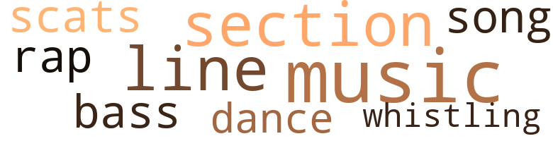
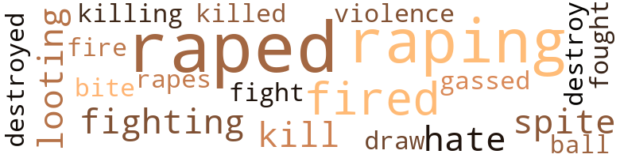
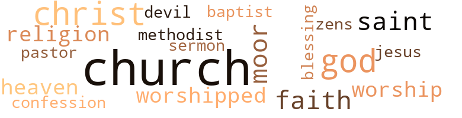

Hang that Nigger, by Robinson, Arthur (1975)
13 music-related terms matched in this text.
Most frequent terms in this topic: music (3); section (2); line (2); whistling (1); dance (1)
bass.n.07
Definition: the member with the lowest range of a family of musical instruments
| word | sentence |
|---|---|
| bass | Now my heart began to beat like a bass drum . |
dance.n.01
Definition: an artistic form of nonverbal communication
| word | sentence |
|---|---|
| dance | " Yes , " she said , " turn on the radio , they said it started with two policemen who went down in the Negro neigh - borhood to stop a fight at a street dance , but instead all hell broke loose . " |
music.n.01
Definition: an artistic form of auditory communication incorporating instrumental or vocal tones in a structured and continuous manner
| word | sentence |
|---|---|
| music | We have a local band to furnish the music for the evening . |
| music | The band had been playing some background music more or less . |
| music | I said , " We have plenty of food and plenty of good music . |
rap.n.05
Definition: genre of African-American music of the 1980s and 1990s in which rhyming lyrics are chanted to a musical accompaniment; several forms of rap have emerged
| word | sentence |
|---|---|
| rap | All you got ta do is cut hair and listen to these niggers come in here and rap , talk about everybody , everybody in town , even the president and what he should be doing . |
scat.n.01
Definition: singing jazz; the singer substitutes nonsense syllables for the words of the song and tries to sound like a musical instrument
| word | sentence |
|---|---|
| scats | We walked in and took our respective scats . |
section.n.01
Definition: a self-contained part of a larger composition (written or musical)
| word | sentence |
|---|---|
| section | She said that the five-and-dime store had a book section , " and you might be able to find something there . |
| section | After we had entered the store I went looking for the book section . |
song.n.01
Definition: a short musical composition with words
| word | sentence |
|---|---|
| song | First we 'll have a song by the choir . |
tune.n.01
Definition: a succession of notes forming a distinctive sequence
| word | sentence |
|---|---|
| line | " I 'd love to have at least five hundred but that would be completely out of line for money . " |
| line | Most of them were standing in line for milk shakes , ice cream , etc . |
whistle.v.01
Definition: make whistling sounds
| word | sentence |
|---|---|
| whistling | Abolishing these programs means that we will lose about $ 13 million , and that 's not whistling " Dixie . " |
46 violence-related terms matched in this text.
Most frequent terms in this topic: raped (11); raping (8); fired (4); fighting (2); hate (2)
destroy.v.04
Definition: put (an animal) to death
| word | sentence |
|---|---|
| destroyed | These areas that are being destroyed just happen to be in the Negro neighborhood itself . |
| destroy | He said , and he made it very clear , that he did not come to destroy or abolish the law , but to fulfill or live by it . |
draw.v.23
Definition: pull (a person) apart with four horses tied to his extremities, so as to execute him
| word | sentence |
|---|---|
| draw | He had his secretary draw up the necessary papers and I told him that if everything worked out all right we would bring the rest of the down-payment with us when we closed the deal . |
fight.n.05
Definition: a boxing or wrestling match
| word | sentence |
|---|---|
| fight | " Yes , " she said , " turn on the radio , they said it started with two policemen who went down in the Negro neigh - borhood to stop a fight at a street dance , but instead all hell broke loose . " |
fight.v.02
Definition: fight against or resist strongly
| word | sentence |
|---|---|
| fighting | You see , we are fighting a losing battle from the word go . " |
| fighting | There in New York , Negroes are fighting and destroying other peoples property , demand - ing their rights - and they do n't even know them . |
| fought | I fought for all America and those who died , died for all America . |
gas.v.01
Definition: attack with gas; subject to gas fumes
| word | sentence |
|---|---|
| gassed | None of us was hungry at the time , but we did have a soft drink there while we were being gassed up . |
hate.v.01
Definition: dislike intensely; feel antipathy or aversion towards
| word | sentence |
|---|---|
| hate | I also told her that this job had become a drag and a rat-race and how I had begun to hate it . |
| hate | " Well , I hate to see him hang . |
kill.v.10
Definition: cause the death of, without intention
| word | sentence |
|---|---|
| kill | You give a person your right arm , and he 'll kill you for the left . |
| killed | I 've seen a man killed in cold blood one night because he refused to excuse a man for stepping on his foot . |
| killing | These headaches are killing me . " |
| kill | The bus station is only a couple of blocks from the bank , so we can kill two birds with one stone . |
looting.n.01
Definition: plundering during riots or in wartime
| word | sentence |
|---|---|
| looting | She said that in New York Negroes are destroying everything , looting stores and taking everything they could get their hands on . |
| looting | It is sad that the Negro is on a rampage and that they are destroying and looting businesses in certain areas . |
malice.n.01
Definition: feeling a need to see others suffer
| word | sentence |
|---|---|
| spite | In spite of all of this , she 's never said anything bad about anyone here . " |
| spite | In spite of all this , I still had some humor left . |
musket_ball.n.01
Definition: a solid projectile that is shot by a musket
| word | sentence |
|---|---|
| ball | " As a matter of fact , I thought the guy had a lot on the ball . |
open_fire.v.01
Definition: start firing a weapon
| word | sentence |
|---|---|
| fired | " I then took the tape out of the machine and told her that it would be all right , and just to put the records back in the file and that I would finish it tomorrow - in other words - Mrs. O'Neil was fired on the spot . |
| fire | I felt that I had to fire Mrs. O'Neil because the company did not allow such involvement at any level . |
| fired | If it had been two employees , male and female , black or white , regardless under these circumstances , they both would have been fired . |
| fired | I tried to throw myself on him but instead I was fired in less than five minutes . |
| fired | After I was fired , I went home . |
rape.v.01
Definition: force (someone) to have sex against their will
| word | sentence |
|---|---|
| raped | He told the judge that he did n't know why he raped that woman . |
| raped | This is the medical report on Mrs. Marian Smith , the woman you were said to have raped . |
| raped | " She told me that she had just been raped by a Negro boy and that she was very nervous and that she was shaking a great deal and that she did not care to talk about it . |
| raped | " And your honor , after my client told me that she had been raped , what I intended to do was to call the Police Department to find out if they were holding anyone for rape . |
| raped | The information I got , your honor , stated that Mrs. Smith had been raped by Mr. Art Simmons , and that he was forcing her to take him to an undisclosed lo - cation . |
| raping | Some Negro was picked up for raping a white woman . " |
| raping | Then he called one fellow by the name of George and asked him if it was about three weeks ago that the Negro was picked up for raping a white woman . |
| raped | The article stated that Mr. Art Simmons of New York had raped Marian Smith , a white woman . |
| raped | He then attempted to have her drive him to an undisclosed destination , but as she ap - proached the police station she jumped out of the car and ran saying , " That nigger just raped me . " |
| raping | The news stated that Art Simmons was in county court jail for raping a white woman and that this was the first time this had happened in this town in over fifty years . |
| raped | " Boy , you are here before me because you raped a white woman and had her to drive you to freedom . |
| raping | This guy was picked up for raping a white woman , " Charley said , " and you want me to represent him ? |
| rapes | No one who rapes a white woman goes free , you know that . " |
| raped | Even if you had raped a Negro woman you would be in serious trouble , but instead you had to go rape a white woman . |
| raping | Down here that is a very serious crime and I do n't know of anyone who has ever lived after being charged with raping a white woman . |
| raping | I have lived here all my life and I , Charley Henry , have never heard of any Negro going free after he has been charged with raping a white woman . |
| raped | Well , he said he did n't know why he raped her . |
| raped | If he ca n't re - member or he does n't know why he raped this woman , you 're wasting your time . " |
| raping | Not only get caught , but charged of raping . |
| raping | " Do you make it a practice of going around raping white women ? " |
sting.n.03
Definition: a painful wound caused by the thrust of an insect's stinger into skin
| word | sentence |
|---|---|
| bite | When we got home I told Charley to come in and that we could talk a while while Gin fixed us a bite to eat . |
violence.n.01
Definition: an act of aggression (as one against a person who resists)
| word | sentence |
|---|---|
| violence | Prejudice should not be found in the heart of man - it produces great violence . |
50 religion-related terms matched in this text.
Most frequent terms in this topic: church (12); God (5); Christ (5); Moor (3); faith (3)
baptist.n.01
Definition: follower of Baptistic doctrines
| word | sentence |
|---|---|
| Baptist | " We have a Methodist and a Baptist , but no Catholic Church . " |
blessing.n.05
Definition: the act of praying for divine protection
| word | sentence |
|---|---|
| blessing | Because I did not give my blessing to after-hours joints , gambling , prostitution , and things of this nature , they set out to get me . |
church.n.02
Definition: a place for public (especially Christian) worship
| word | sentence |
|---|---|
| church | Do you think I should have it announced in church ? " |
| church | We have some sisters in the church who will take care of everything and furnish the food , and Dan is one of the best barbecuers in the country . " |
| church | Mrs. Mann asked my wife if she attended church often . |
| church | Mrs. Sprouts asked if that was the church where folks worshipped statues . |
| church | What happened is that each saint played a particular and important role in the creation of Christ 's church . |
| church | These are some of the things we keep in the basement at the church . |
| church | Sunday after church I met with some of the brothers , and at this meeting were two of the senior sisters of the church , Mrs. Sprouts and Mrs. Mann . |
| church | Sunday after church I met with some of the brothers , and at this meeting were two of the senior sisters of the church , Mrs. Sprouts and Mrs. Mann . |
church.n.04
Definition: the body of people who attend or belong to a particular local church
| word | sentence |
|---|---|
| church | I belong to the local church and we have some of the best cooks in the world and they enjoy cooking . |
| church | Charley said , " Mrs. Simmons , I was just telling Mr. Simmons that we have brothers and sisters in our church who have certain qualities and they enjoy doing what they can do . |
| church | " What church do you belong to ? " |
| church | " I 'm Catholic , but I have n't been to church since I 've been here . " |
| Church | " We do n't have a Negro Catholic Church around here that I know of . " |
| Church | " We have a Methodist and a Baptist , but no Catholic Church . " |
confession.n.05
Definition: the document that spells out the belief system of a given church (especially the Reformation churches of the 16th century)
| word | sentence |
|---|---|
| confession | Before Mrs. O'Neil 's attorney completed reading the testimony , he said , " On behalf of Mrs. O'Neil , this is a complete confession of any wrong-doing against anyone per - sonally or otherwise . |
curate.n.01
Definition: a person authorized to conduct religious worship
| word | sentence |
|---|---|
| pastor | Let me see , Rev. Jackson and his wife - that 's the pastor you know - he was invited , and the press will also be there . |
eden.n.01
Definition: any place of complete bliss and delight and peace
| word | sentence |
|---|---|
| Heaven | And if any man set aside even the least of the laws , and demands or teaches that others do the same , he will have the lowest place in the Kingdom of Heaven . |
| Heaven | But anyone who keeps the law and teaches others to do so , he will stand high in the Kingdom of Heaven . |
god.n.03
Definition: a man of such superior qualities that he seems like a deity to other people
| word | sentence |
|---|---|
| God | The only chance I have of seeing him now is D-day and . . . then , only God knows . " |
| God | I feel it is my responsibility to tell you the fear of God is the beginning of knowledge . |
| God | Punishment is justice for the unjust , and from one blood God has made all nations . " |
| God | It looks like you 'll be going home , may God help us all . " |
| God | She told him that she was trying to do the same , trying not to worry and that God would bring me back home . |
jesus.n.01
Definition: a teacher and prophet born in Bethlehem and active in Nazareth; his life and sermons form the basis for Christianity (circa 4 BC - AD 29)
| word | sentence |
|---|---|
| Jesus | You want me to be a Jesus Christ and go up there and heal him . |
messiah.n.01
Definition: any expected deliverer
| word | sentence |
|---|---|
| Christ | You want me to be a Jesus Christ and go up there and heal him . |
| Christ | What happened is that each saint played a particular and important role in the creation of Christ 's church . |
| Christ | But this power is only through Christ , our Lord . |
| Christ | But I do believe that Christ had something to say about the law and the power of it . |
| Christ | Christ made it very clear when he said , ' How can you keep my law if you do n't obey yours ? ' |
methodist.n.01
Definition: a follower of Wesleyanism as practiced by the Methodist Church
| word | sentence |
|---|---|
| Methodist | " We have a Methodist and a Baptist , but no Catholic Church . " |
moor.n.01
Definition: one of the Muslim people of north Africa; of mixed Arab and Berber descent; converted to Islam in the 8th century; conqueror of Spain in the 8th century
| word | sentence |
|---|---|
| Moor | " My name is Dan Moor , " he said . |
| Moor | Then Mr. Moor said , " The thing for you to do is to go back to New York where you came from . |
| Moor | At this time the other guy playing checkers with Mr. Moor - his name was Jack Anderson - he came over and also got involved in the conversation . |
religion.n.01
Definition: a strong belief in a supernatural power or powers that control human destiny
| word | sentence |
|---|---|
| faith | This would signify good faith and understanding . |
| religion | Basic ideas and basic principles are like religion . |
| faith | We had faith and trust in his decision . |
| religions | My husband has also instructed me not to discuss religions with people of different beliefs , nor should I take sides when it is being discussed by others . |
| faith | I think that they have such little faith in themselves and what they can do . |
saint.n.02
Definition: person of exceptional holiness
| word | sentence |
|---|---|
| saint | What happened is that each saint played a particular and important role in the creation of Christ 's church . |
| saint | And each saint is being remembered for what he did . |
| saints | " You see , we have statues of saints as well as of the crucifixion and they are all common among us believers , so common we seem to forget them . |
satan.n.01
Definition: (Judeo-Christian and Islamic religions) chief spirit of evil and adversary of God; tempter of mankind; master of Hell
| word | sentence |
|---|---|
| devil | When they pulled him out of that car they must have beaten the devil right out of him , because right now he does n't know A from Adams . |
sermon.n.02
Definition: a moralistic rebuke
| word | sentence |
|---|---|
| sermon | If Rev. Jackson speaks last he might want to preach and if that 's the case , after his sermon we can all have a good time . " |
worship.n.01
Definition: the activity of worshipping
| word | sentence |
|---|---|
| worship | Gin said , " We do n't worship statues . |
worship.v.02
Definition: show devotion to (a deity)
| word | sentence |
|---|---|
| worshipped | Mrs. Sprouts asked if that was the church where folks worshipped statues . |
| worships | But no one worships him . |
| worshipped | In some Negro homes , you will find pictures of some of the strong Civil Rights leaders but they are not being worshipped at all , at least , I hope not . " |
zen.n.01
Definition: school of Mahayana Buddhism asserting that enlightenment can come through meditation and intuition rather than faith; China and Japan
| word | sentence |
|---|---|
| zens | No state shall make or enforce any law which shall abridge the privilege or immunities of citi - zens of the United States , nor shall any State deprive any person of life , liberty or property without due process of law , nor deny any person , within its jurisdiction , the equal protection of the law . |